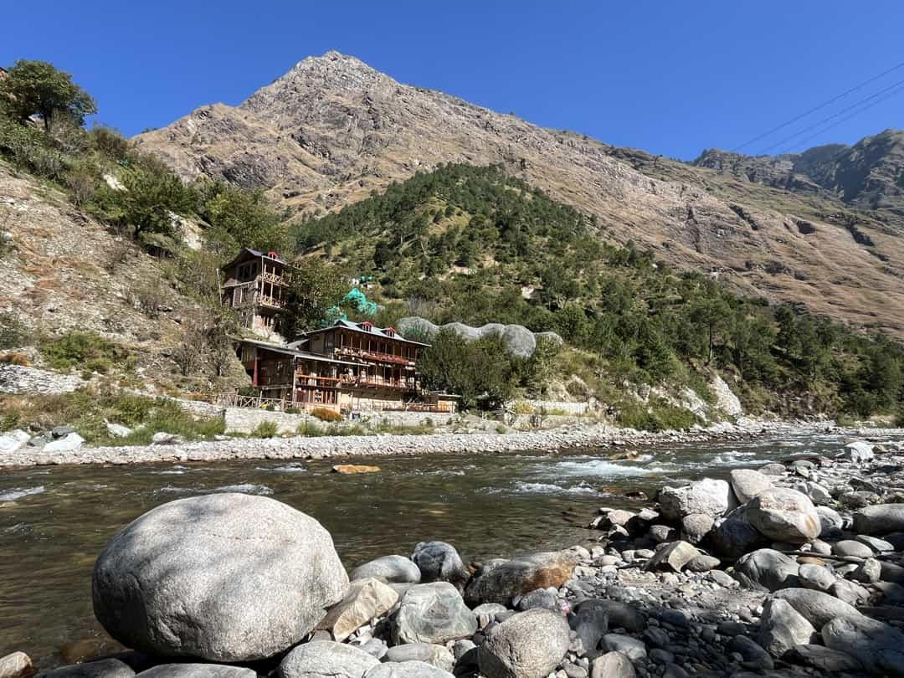
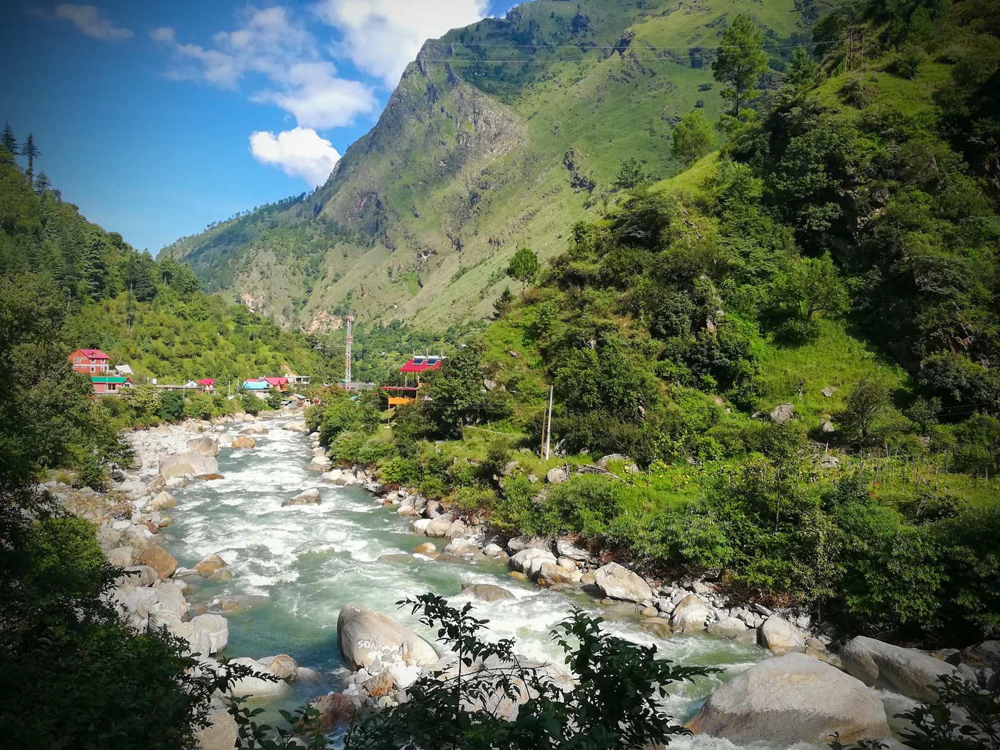
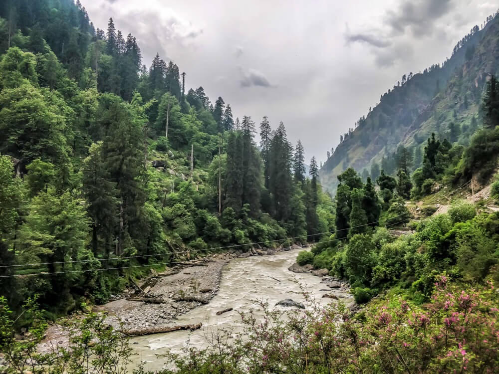

A quieter Kullu river, trout water and the doorway into a UNESCO forest
Tirthan follows a clear tributary of the Beas through Banjar toward Gushaini, where the Great Himalayan National Park begins. Unlike Manali or Kasol, there is no commercial strip. Homestays sit above the water, the forest comes down to the road, and the reason most people come is the park on one side and the river on the other.
Two or three nights is the right first stay: a riverside day, a guided walk in the park buffer, and time that is not spent changing hotels. Trout fishing is seasonal and permit-based. Jalori and the higher meadows belong to a longer plan, not a rushed afternoon.

Clear water, opening trails and the first colour on the slopes above Gushaini.
Long daylight, comfortable river days and the last easy weeks before the rains.
The valley many regulars prefer — dry paths, full river and thin crowds.
Wood-stove evenings and a hushed forest. Pack for frost, not for long treks.



Tell us if you want a quiet river stay, a GHNP walking day or Tirthan paired with Manali. We’ll keep the pace slow.